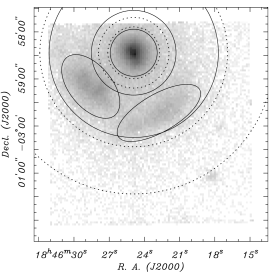
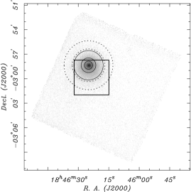
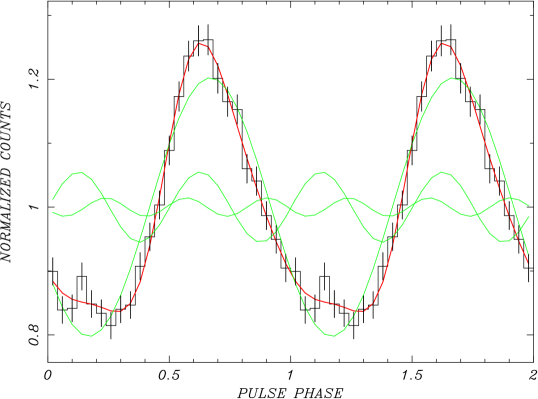
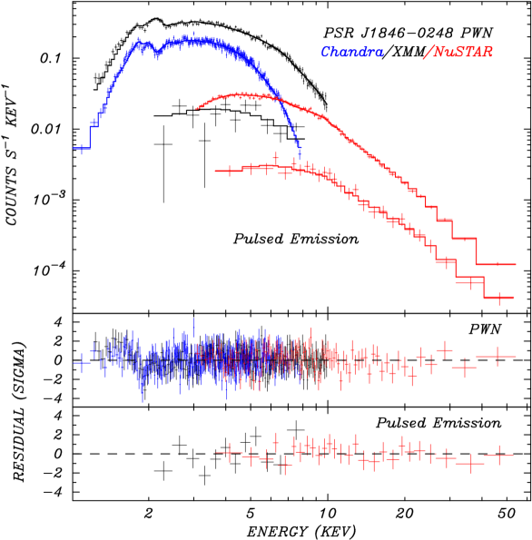
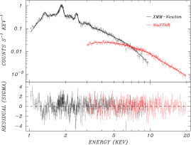
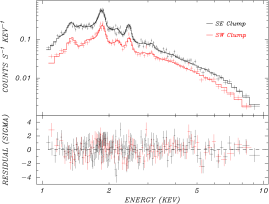
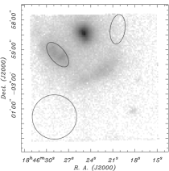
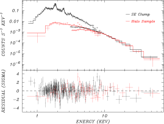
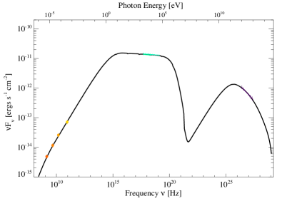

التحليل الطيفي بالأشعة السينية للنباض عالي المغنطة PSR J1846–0258،
وسديم رياحه وبقايا المستعر الأعظم الحاضنة Kes 75
الملخص
نقدم تحليلا طيفيا عريض النطاق بالأشعة السينية للمكونات النشطة التي تؤلف بقايا المستعر الأعظم (SNR) Kesteven 75، وذلك باستخدام أرصاد 2017 أغسطس 17-20 المتزامنة من XMM-Newton وNuSTAR، وهي الفترة التي وُجد فيها النباض PSR J18460258 في حالة السكون. وتستضيف هذه البقايا الفتية سديما ساطعا لرياح النباض يغذيه نباض معزول مدفوع بالدوران وعالي الطاقة ( erg s-1)، وله عمر تباطؤ دوراني لا يتجاوز yr. أما مجاله المغناطيسي المستنتج ( G) فهو الأكبر المعروف في هذه الأجسام، ومن المرجح أنه مسؤول عن فترات من نشاط التوهجات والاندفاعات، بما يوحي بانتقال بين حالة مغناطيسية نجمية وإليها. ويمكن توصيف الانبعاث النابض من PSR J18460258 توصيفا جيدا في مدى 250 keV بنموذج قانون قوى ذي دليل فوتوني وتدفق غير ممتص في مدى 210 keV قدره erg s-1 cm-2. ولا نجد دليلا على مكون غير حراري إضافي فوق keV في الحالة الراهنة، كما يكون مألوفا في المغناطيسارات. وبالمقارنة مع طيف النباض من Chandra، فإن الكسر النابض الجوهري يبلغ % في نطاق 210 keV. ويعطي طيف قانون قوى للـ PWN قيمة في نطاق 155 keV، من دون دليل على تقوس ضمن هذا المدى، وتدفقا غير ممتص في مدى 210 keV قدره erg s-1 cm-2. وتكشف بيانات NuSTAR دليلا على مكون صلب في الأشعة السينية يهيمن على طيف SNR فوق 10 keV، ونعزوه إلى مكون من PWN مبعثر بالغبار. ونمذجنا التطور الديناميكي والإشعاعي لمنظومة Kes 75 لتقدير خصائص ميلاد النجم النيوتروني، وطاقية سليفه، وخصائص PWN. وتشير هذه النتائج إلى أن سليف Kes 75 كان في الأصل ضمن نظام ثنائي نقل معظم كتلته إلى رفيق قبل أن ينفجر.
1 مقدمة
حتى الآن اكتُشف أكثر من 2000 نباض “عادي” مدفوع بالدوران (RPP)، وكانت كلها تقريبا نباضات راديوية. وينشأ انبعاثها الحزمي من فقدان الطاقة الدورانية من ثنائي قطب مغناطيسي مشع للنجم النيوتروني (NS) أثناء تباطؤه التدريجي (Shapiro & Teukolsky, 1983). وغالبا ما تظهر النباضات المعزولة الفتية والنشطة سدما راديوية و/أو سينية لرياح النباض (PWN). ويُعتقد أن تحويل الطاقة الدورانية إلى إشعاع كهرومغناطيسي ورياح جسيمية هو ما يمد هذه السدم السنكروترونية بالطاقة (Gaensler, & Slane, 2006).
وعلى النقيض من ذلك، فإن المغناطيسارات (مثلا، Turolla et al., 2015) هي أيضا نجوم نيوترونية فتية ومعزولة، لكنها تفتقر عادة إلى الانبعاث الراديوي المستمر وإلى السدم السنكروترونية الخاصة بـ النباضات المدفوعة بالدوران. ففي حالة السكون، تبعث هذه النباضات البطيئة الدوران ( s) بصورة فريدة في نطاق الأشعة السينية. والأبرز أن انبعاثها الحراري السيني يتجاوز بكثير معدل فقد طاقتها الحركية الدورانية ()، ويُعتقد بدلا من ذلك أنه يتغذى من اضمحلال مجالها المغناطيسي الهائل، الذي يتجاوز القيمة الحرجة الكمومية G (Duncan & Thompson, 1992).
تلقي الاستثناءات الحديثة من الخصائص التعريفية لكل من النباضات المدفوعة بالدوران والمغناطيسارات ضوءا جديدا على تطورها وآليات انبعاثها: 1) خلال السنوات القليلة الماضية كُشف عدد متزايد من المغناطيسارات ذات “مجال B منخفض”، التي تلامس مجالاتها المغناطيسية مجالات النباضات المدفوعة بالدوران (مثلا، Rea, 2014)؛ 2) المغناطيسارات العابرة المزعومة التي تظهر انبعاثا راديويا متقطعا أثناء فوراناتها (مثلا، Camilo et al., 2008)؛ 3) أدلة حديثة على أول كشف لسديم رياح حول مغناطيسار (Swift J1834.90846; Younes et al., 2016)؛ و4) اكتشاف تغيرية في PWN يحيط بالنباض الراديوي عالي المجال B والمدفوع بالدوران J1119–6127، والذي أظهر سلوكا شبيها بالمغناطيسارات Blumer (2017).
ومن النتائج اللافتة اكتشاف اندفاعات مللي ثانية شبيهة بالمغناطيسارات من PSR J18460258 في Kes 75 (Gavriil et al., 2008; Kumar & Safi-Harb, 2008; Ng et al., 2008). يقع هذا النباض السيني العالي الطاقة ( erg s-1) والمدفوع بالدوران بفترة 325 ms (Gotthelf et al., 2000)، مع سديم رياحه الساطع، داخل قلب SNR الفتية Kes 75 (Helfand et al., 2003; Su et al., 2009; Temim et al., 2012). وقد رُصد النباض مصادفة في 2006 في حالة توهج، مع تليّن ملحوظ في طيفه وبعض التغير في بنية PWN. ومؤخرا، بعد 14 سنوات، أُبلغ عن نشاط متجدد من النباض (Kimm et al., 2020). ومع ذلك، فإن طاقية هذا النباض وخصائصه الطيفية تميزه بوضوح عن المغناطيسار. وربما نرصد حالة تطورية فريدة ونادرة، وربما نعاين انبثاق مجال مغناطيسي مدفون بقوة مغناطيسارية (انظر Halpern & Gotthelf 2010).


حصلنا على أرصاد جديدة ومتزامنة من XMM-Newton وNuSTAR لمنظومة Kes 75 بهدف دراسة الخصائص الطيفية لمكوناتها على نحو أفضل، واستنتاج تآثراتها وتطورها. في §2، نصف مجموعات البيانات هذه، محللة بالاقتران مع بيانات Chandra أرشيفية حديثة. ونجد أن نموذج قانون قوى بسيطا يكفي لتوصيف طيف النباض، من دون دليل على مكون طيفي أفلطح فوق keV، وهي سمة من سمات المغناطيسارات. كما أن طيف PWN، الموصوف جيدا أيضا بقانون قوى واحد، لا يظهر دليلا على التقوس. ونقيس هالة مبعثرة بالغبار تتجلى كمكون طيفي صلب عند keV في طيف SNR.
استنادا إلى هذه النتائج الطيفية، نطبق في §3 نموذجا للتطور الديناميكي والإشعاعي على توزيع الطاقة الطيفية (SED) لمنظومة Kes 75. وأخيرا، نناقش في §4 دلالات نمذجة الأطياف العريضة النطاق والتطور. ويتيح اكتشاف نشاط شبيه بالمغناطيسارات من النباض الفتي المدفوع بالدوران فرصة فريدة لدراسة الصلة بين الطبيعة المتميزة لـ النباضات المدفوعة بالدوران والمغناطيسارات، وميلادها وتطورها المبكر.
2 أرصاد الأشعة السينية وتحليلها
2.1 NuSTAR
رصدنا Kes 75 بواسطة NuSTAR في 2017 أغسطس 17 ضمن برامج الراصد الزائر AO3. بدأ التعريض الاسمي البالغ 100 ks عند 18:56:09 UT واستمر 208 ks، مع تسبب حجب الأرض في فجوات زمنية مدارية دورية. ويتألف NuSTAR من مقرابين للأشعة السينية متراصفين، مع وحدتي كاشف في المستوى البؤري FPMA وFPMB، تتكون كل منهما من مصفوفة حساسات CdZnTe ذات عقد (Harrison et al., 2013). وهذه الوحدات حساسة للأشعة السينية في نطاق 379 keV، بدقة طيفية مميزة قدرها 400 eV FWHM عند 10 keV. وتوفر المرايا الرقائقية متعددة التعشيش دقة تصوير FWHM ( HPD) ضمن مجال رؤية (FoV) قدره (Harrison et al., 2013). وتبلغ دقة التوقيت الاسمية لـ NuSTAR 2 ms rms بعد تصحيح انجراف الساعة على المتن، مع إظهار أن المقياس الزمني المطلق أفضل من ms (Mori et al., 2014; Madsen et al., 2015). وهذه الدقة أكثر من كافية لحل الإشارة الواردة من PSR J18460258.
عولجت بيانات NuSTAR وحُللت باستخدام حزمة FTOOLS 09May2016_V6.19 (NUSTARDAS 14Apr16_V1.6.0) مع ملفات قاعدة بيانات معايرة NuSTAR (CALDB) الصادرة في 2016 يوليو 6. وتوفر مجموعة البيانات الناتجة زمنا صافيا جيدا للتعريض مجموعه 95 ks. وفي جميع التحليلات اللاحقة دمجنا بيانات كاشفي FPM. وكما يبين الشكل 1، صُورت SNR الصغيرة القطر Kes 75 كاملة على كاشفات FPM، متمركزة عند العقدة-0. ولا يُحل النباض مكانيا عن انبعاث PWN، وقد أُخذت مساهمته في الحسبان في التحليل الطيفي باستخدام بيانات Chandra.
2.2 XMM-Newton
حصلنا أيضا على رصد أقصر لكنه غير منقطع مدته 51.4 ks من XMM-Newton لـ Kes 75 في 2017 أغسطس 19 بدءا من 14:28:17 UT، متداخلا مع نهاية رصد NuSTAR بعد days من بدايته. وتتكون كاميرا التصوير الفوتوني الأوروبية (EPIC) على متن XMM-Newton من ثلاثة كواشف، كاشف EPIC pn (Strüder et al., 2001) وEPIC MOS1 وMOS2 (Turner et al., 2001). وتقع هذه الكواشف في المستوى البؤري لمرايا رقائقية متراصفة متعددة التعشيش، بدالة انتشار نقطية على المحور ذات FWHM يساوي و عند 1.5 keV، لكاشفي pn وMOS على التوالي. وكواشف EPIC حساسة للأشعة السينية في نطاق 0.1512 keV بدقة طاقية متوسطة قدرها 2050.
حصلنا على بيانات EPIC pn في نمط PrimeSmallWindow ()، بدقة زمنية محسنة قدرها 6 ms، تكفي لحل PSR J18460258 طوريا، وذلك على حساب زمن ميت كبير نسبته 29%. وقد صُورت في مجال الرؤية كل من النباض وPWN والتكتلات الرئيسة لـ SNR (انظر الشكل 1). ولحل الاندفاعات السريعة المحتملة من النباض شغلنا EPIC MOS2 في نمط FastUncompressed، الذي يوفر دقة زمنية 1.5 ms مع تصوير 1D على CCD المركزي في EPIC، لكن على حساب زيادة في مكون الخلفية. أما بيانات MOS1 فقد اكتُسبت في نمط النافذة الصغيرة PrimePartialW2 على CCD المركزي مع شغل PWN لمجال الرؤية المخفض تقريبا. وتبلغ الدقة الزمنية في هذا النمط 300 ms، وهي مفيدة للبحث عن توهجات أبطأ لكنها غير كافية لحل PSR J18460258.
خُفضت البيانات وحُللت باستخدام برنامج التحليل القياسي (SAS) بالإصدار v.15 مع أحدث ملفات المعايرة المتاحة. وبعد ترشيح توهجات الخلفية حصلنا على زمن حي صالح مقداره 50.1/36.1 ks لبيانات MOS/pn.
2.3 بيانات Chandra الأرشيفية
لتصحيح تحليلنا لـ XMM-Newton حول Kes 75 والتحقق منه، استخدمنا بيانات Chandra أرشيفية لفصل النباض وPWN ومكونات SNR مكانيا في نفس نطاق الطاقة، والحصول على أدق التدفقات. ومن بين أرصاد Chandra العديدة لـ Kes 75 التي جُمعت على مر السنين، اخترنا لهذا العمل ObsID #18030، وهو رصد عميق اكتُسب في أقرب زمن إلى مجموعة بيانات XMM-Newton وNuSTAR المتزامنة لدينا. أُجري هذا الرصد باستخدام مطياف التصوير CCD المتقدم (ACIS) في 2016 يونيو 8 بزمن تعريض 86 ks. وقد أُعيدت معالجة البيانات وتنظيفها باستخدام روتينات CIAO v4.10 القياسية، مما نتج عنه زمن تعريض فعال قدره 84.9 ks. ويؤدي معدل العد من PSR J18460258 في Chandra نسبة إلى زمن الإطار الاسمي 3.14 s لكاشف ACIS CCD إلى كسر تراكم مقداره للنباض. وينتج عن ذلك تشوه واضح في طيفه، عولج بإدراج نموذج pileup الخاص بـ Chandra في جميع الملاءمات الطيفية للنباض باستخدام ACIS المعروضة هنا. ونقارن نتائج ملاءماتنا المشتركة بتلك المحصّلة من بيانات عهود أقدم (Helfand et al., 2003; Morton et al., 2007; Kumar & Safi-Harb, 2008; Ng et al., 2009; Su et al., 2009; Temim et al., 2012) كما يرد في الجدول 1.
2.4 تحليل التوقيت
في تحليل التوقيت الآتي، حُولت جميع أزمنة وصول الفوتونات إلى الزمن الديناميكي المركزي (TDB) باستخدام إيفيميريد النظام الشمسي DE405 وإحداثيات Chandra المعطاة في Helfand et al. (2003). واستخرجنا الفوتونات باستخدام فتحة نصف قطرها و لبيانات XMM-Newton وNuSTAR، على التوالي، وقد وُجد أنها تعظم إشارة النبض المضمنة. وبالنسبة إلى NuSTAR، أدرجنا الفوتونات عبر كامل نطاق الطاقة، لكننا قصرنا تحليلنا لبيانات XMM-Newton على نطاق 0.510 keV للحد من تلوث الجسيمات.
بحثنا عن الإشارة المعروفة من PSR J18460258 باستخدام تحويل فورييه سريع معجل لأخذ مشتق التردد الكبير المرتبط بالنباض في الحسبان. وقُسمت أزمنة وصول الفوتونات من بيانات NuSTAR الأطول إلى منحنى ضوئي بفواصل 0.01 s، وبُحثت عند الدقة الكاملة التي يتيحها امتداد البيانات. واستُعيدت إشارة عالية الدلالة قرب التردد المتوقع ومشتقه. ثم نقّحنا أقوى إشارة باستخدام اختبار (Buccheri et al., 1983)، الملائم لملف النبضة شبه الجيبي (انظر الشكل 2). وفي التحليل الطيفي المحلول طوريا الآتي، نستخدم أفضل فترة ملاءمة s ومشتق فترة عند العهد MJD 58013.
بحثنا أيضا في PSR J18460258 عن اندفاعات مللي ثانية محتملة شبيهة بتلك التي كشفها RXTE (Gavriil et al., 2008)، ففحصنا منحنياته الضوئية على مدى من المقاييس الزمنية وصولا إلى 10 ms. وقارنا تكرار حدوث العدادات في كل خانة منحنى ضوئي بما تتنبأ به إحصاءات بواسون استنادا إلى معدل العد المتوسط، فلم نجد قيما شاذة ذات دلالة. لذلك نستنتج أن النباض، خلال مدة رصدنا بـ NuSTAR/XMM-Newton، لم يبد خصائص زمنية ذات دلالة تشبه المغناطيسار.

2.5 التحليل الطيفي
نستخدم في الملاءمة الطيفية حزمة XSPEC (12.10.0c) (Arnaud, 1996)، ونصف كثافة العمود بنموذج الامتصاص المدمج TBabs، مع اختيار وفرات الشمس wilm (Wilms et al., 2000) ومقطع التأين الضوئي vern (Verner et al., 1996). وتُستخدم إحصائية لتقييم الملاءمات الطيفية في كامل العمل، وتُعطى لايقينيات المعاملات عند مستوى ثقة 90% (C.L.) لمعامل واحد أو أكثر محل اهتمام، بحسب الملاءمة. وقد وُلدت مصفوفات الاستجابة وملفات الاستجابة المساعدة لكل مجموعة بيانات باتباع الإجراءات القياسية الخاصة بكل بعثة. ونشير إلى أن الملاءمات الطيفية السابقة في الأدبيات استخدمت نموذج الامتصاص Wabs، وهو امتصاص كهروضوئي يستعمل مقاطع Wisconsin (Morrison & McCammon, 1983). ويمكن أن تسفر الملاءمات الطيفية باستخدام نموذج كثافة العمود الأحدث عن قيمة مقاسة تختلف اختلافا ملحوظا، حتى لنفس نموذج الطيف الجوهري.
2.5.1 طيف PSR J18460258 النابض
لعزل المكون النابض عريض النطاق لـ PSR J18460258 في طيفي XMM-Newton وNuSTAR، قسمنا ملف النبض إلى فترتين طوريّتين تقابلان منطقتي القمة (نبضة “قيد التشغيل”) والوادي (نبضة “خارج التشغيل”). ومع أن طيف الوادي يوفر تمثيلا مثاليا للخلفية غير النابضة المراد طرحها من طيف القمة، فإنه يتضمن بالضرورة جزءا من الانبعاث النابض نفسه. ولإشارة جيبية نظرية، يكون معامل تصحيح التدفق للطيف النابض بعد طرح الخلفية . وفي حالتنا، حيث يكون ملف النبض أكثر تحدبا من منحنى جيبي، تبلغ معاملات التصحيح المحسوبة 1.41 و1.30 في نطاق 210 keV، لبيانات XMM-Newton وNuSTAR على التوالي. ويفترض ذلك أن شكل النبضة مستقل عن الطاقة أساسا، ولا يوجد دليل ذو دلالة على خلاف ذلك.
اخترنا فتحات مصدر بنصف قطر لاستخراج أطياف النباض لكل بعثة، وذلك للمساعدة في تقدير التدفق الكلي من النباض وتوليد مصفوفات استجابة للمصدر النقطي. وبما أن طيفي المصدر (“on”) والخلفية (“off”) يحتويان عددا متقاربا من العدادات في كل قناة، فإن طرحهما يؤدي إلى لايقينيات كبيرة. ومع أخذ ذلك في الاعتبار، جمعنا جميع أطياف المصدر في قنوات ملاءمة طيفية تحتوي حدا أدنى لنسبة الإشارة إلى الضجيج مقداره 3 سيغما بعد طرح الخلفية.
يلائم الطيف النابض المشترك من XMM-Newton وNuSTAR جيدا نموذج قانون قوى ممتص بسيط في نطاقي 210 keV و350 keV، على التوالي. وكثافة العمود مقيدة على نحو ضعيف في هذه الملاءمات، ولذلك ثُبتت عند cm-2، وهي القيمة المكررة المستحصلة من تحليل PWN النهائي عالي الإحصاء (الموصوف أدناه). ويبلغ أفضل دليل فوتوني ملائم ، مع لعدد 36 من درجات الحرية. أما التدفق المصحح غير الممتص في مدى 210 keV فهو erg s-1 cm-2 و erg s-1 cm-2 لملاءمتي XMM-Newton وNuSTAR الطيفيتين، على التوالي. وهذه التدفقات متسقة ذاتيا ضمن لايقينيات القياس. ونلاحظ إضافة إلى ذلك أن متوسط التدفق النابض البالغ erg s-1 cm-2، يتسق تماما مع تدفق 210 keV الذي يتنبأ به نموذج قانون القوى المقوس لـ Kuiper (2018)، وهو erg s-1 cm-2، والمستخدم لتوصيف التدفق من الأشعة السينية إلى أشعة غاما.
ولتقدير الكسر النابض لـ PSR J18460258، استخرجنا طيفا كليا للنباض من رصد Chandra في 2016 باستخدام فتحة ومنطقة خلفية حلقية . وتؤدي ملاءمة قانون قوى ممتص في نطاق 110 keV مع تثبيت كثافة العمود عند إلى أفضل قيمة ملائمة ، مع لعدد 66 من درجات الحرية. والتدفق الكلي غير الممتص للنباض هو erg s-1 cm-2، ما يعني كسرا نابضا جوهريا قدره % في نطاق 210 keV، بافتراض أن تدفق النباض ظل ثابتا بين الرصدين، وهو ما يتضح بالفعل كما يبين القسم التالي.
ولمقارنة قياساتنا النابضة بالنتائج المنشورة عن PSR J18460258 المستحصلة في عهود أقدم، أعدنا ملاءمة هذه الأطياف باستخدام نموذج XSPEC Wabs التاريخي للامتصاص بين النجمي Helfand et al. (2003); Kumar & Safi-Harb (2008); Ng et al. (2008). وتلخص هذه النتائج في الجدول 1.

| Reference | Fluxa | ||
|---|---|---|---|
| ( cm-2) | [] | ||
| Chandra 2000 data set | |||
| Helfand et al. 2003 | 3.96 (fixed) | ||
| Ng et al. 2008 | 4.0 (fixed) | ||
| Gavriil et al. 2008 | … | … | |
| Kumar et al. 2008 | 3.96 (fixed) | ||
| Chandra 2006 data set (Flare Epoch) | |||
| Ng et al. 2008 | 4.0 (fixed) | ||
| Gavriil et al. 2008 | … | … | |
| Kumar et al. 2008 | |||
| Chandra 2016 data set | |||
| This Work | 4.0 (fixed) | ||
| XMM-Newton & NuSTAR 2017 data sets (Pulsed Only) | |||
| This Work | 4.0 (fixed) | ||
2.5.2 طيف PWN الخاص بـ PSR J18460258
كما ذُكر أعلاه، لا يمكن فصل PWN مكانيا عن انبعاث النباض في مجموعتي بيانات XMM-Newton وNuSTAR. لذلك نلائم الطيف المركب ونحتسب انبعاث النباض داخل فتحة المصدر بإضافة مكون قانون قوى إضافي. وبالنسبة إلى XMM-Newton، نقدر مساهمة النباض باستخدام نتائج Chandra المحلولة مكانيا؛ وبالنسبة إلى NuSTAR، نستخدم الطيف النابض المقاس، وكلاهما عُرض أعلاه. وهذا ضروري لاحتساب تلوث مهم دون 2 keV في طيف PWN من XMM-Newton بفعل النباض وبيئته، ولاحتساب الانبعاث النابض الذي يشوه طيف NuSTAR فوق 30 keV. وبالنسبة إلى أطياف XMM-Newton نستخدم فتحة مصدر تلتقط معظم تدفق PWN وتوسط طيفه المعتمد على نصف القطر. أما بالنسبة إلى طيف NuSTAR، وبسبب دقته المكانية الأضعف، فنستخدم فتحة مصدر أصغر مقدارها لاحتساب الضبابية الإضافية لتدفق PWN كي تطابق على نحو أفضل منطقة استخراج طيف XMM-Newton، مع تقليل التلوث المحتمل من فصوص SNR القريبة في الوقت نفسه. وفي كلتا البعثتين، نقدر خلفية SNR في فتحة المصدر باستخدام منطقة خلفية حلقية متحدة المركز . ونلاحظ أن مساهمة الخلفية صغيرة (10%) إلا دون 2 keV. ولأن PWN محلول مكانيا على نحو ضعيف في كلا المقرابين، نستخدم مرة أخرى مصفوفات استجابة مرايا لمصدر نقطي لتوصيف المساحة الفعالة.
تُلائم أطياف PWN المتوسطة مكانيا من XMM-Newton وNuSTAR ملاءمة مشتركة مع ترك تطبيعها حرا للسماح بالفروق المنهجية في تدفق الفتحة. ويُوصف الطيف جيدا بقانون قوى ممتص عبر مدى 1.250 keV الذي تغطيه مجموعتا البيانات. ويعطي ذلك كثافة عمود cm-2 ودليلا فوتونيا ، مع لعدد 399 من درجات الحرية (DoF). ونلاحظ أنه من دون أخذ مكون النباض في هذه الأطياف بالحسبان لا يمكن الحصول على دليل قانون قوى متسق في نطاق التداخل 310 keV. وللتحقق من وجود دليل على تقوس طيفي، لائمنا نموذجا لقانون قوى مكسور على الطيف المشترك، غير أنه لا يمكن قياس تغير ذي دلالة في الدليل ضمن البيانات الحالية.
نقارن بعد ذلك طيف PWN من Chandra في 2016 بنتيجة XMM-Newton أعلاه، ضمن نطاقهما الطاقي المشترك. واستخرج طيف من منطقة XMM-Newton ذات ، مع استبعاد دائرة حول النباض. وتعطي أفضل ملاءمة بنموذج قانون قوى في نطاق 1.0–8 keV قيمة cm-2 ودليلا فوتونيا ، مع لعدد 306 من درجات الحرية. وهذه المعاملات متسقة مع نتائج XMM-Newton، ما يشير إلى عدم وجود تغير طيفي بين العهدين؛ وإذا كان الأمر كذلك، فإن تدفق Chandra يُعد الأدق. ومن المطمئن أن تفاصيل البواقي في كلا الطيفين متماثلة فعليا. وتشير الانحرافات المنهجية المشتركة في الطيفين إلى أنها مرتبطة بالفروق في انبعاث SNR بين منطقتي المصدر والخلفية.
وأخيرا، للحصول على أدق طيف وأدق قياس تدفق لـ PWN، أعدنا ملاءمة أطياف PWN المشتركة من XMM-Newton وNuSTAR مع إضافة طيف Chandra، ومرة أخرى بتطبيعات مستقلة. وتبلغ أفضل المعاملات الملائمة cm-2 ودليلا فوتونيا ، مع لعدد 548 من درجات الحرية. ويُحدد تدفق PWN النهائي غير الممتص في نطاق 2–10 keV، وقدره erg s-1 cm-2، من مكون Chandra في هذه الملاءمة بعد السماح بالتدفق المفقود من منطقة النباض المستبعدة، وهو أثر مقداره 10%. ويُقدر هذا التدفق المفقود من طيف العقدة الشمالية الساطعة في PWN، المستخرج من فتحة . وتتسق نسبة تدفق النباض إلى التدفق الكلي (النباض+PWN) مع الكسر النابض المرصود 10% في نطاق 210 keV. وترد نتائج النباض وPWN الطيفية في الجدول 2


| Parameter | Pulsar | PWN | |
|---|---|---|---|
| Pulsed | Total | ||
| ( cm-2) | (fixed) | (fixed) | |
| Photon Index | |||
| (abs.) | |||
| (unabs.) | |||
| Luminosity | |||
| 0.99(36) | 1.19(66) | 1.04(399) | |
2.5.3 طيف SNR في Kes 75
استخرجنا أيضا أطيافا من XMM-Newton وNuSTAR لانبعاث SNR باستخدام حلقة مصدر ومنطقة خلفية (انظر الشكل 1). ويغطي ذلك تكتلي الأشعة السينية الساطعين الموسومين بالتكتل الجنوبي الشرقي (SE) والتكتل الجنوبي الغربي (SW) في Helfand et al. (2003)، شاملا معظم انبعاث البقايا. وبالنسبة إلى XMM-Newton، في نمط النافذة الصغيرة، وقع جزء من SNR خارج مجال الرؤية، لكنه لا يزال يتضمن التكتلين.
| Southeast | Southwest | Sectora | |
|---|---|---|---|
| Region R.A. | 18:46:22.764 | 18:46:28.574 | 18:46:24.893 |
| Region Decl. | 02:59:43.33 | 02:59:09.53 | 02:58:28.31 |
| Ellipse radii | … | ||
| Ellipse P.A. | … | ||
| Annulus radii | … | … | |
| cm-2) | |||
| ( s cm-3) | 8.5 | 4.2 | |
| Mg | |||
| Si | |||
| S | |||
| NEI Flux ( | 3.2 | 1.7 | 10 |
| Photon Index | |||
| PL Flux ( | 1.6 | 1.3 | |
| 1.459 (452) | 1.369 (363) | 1.369 (896) |
لُوئمت أطياف SNR بنموذج بلازما حرارية غير متوازنة (XSPEC NEI) مع وفرات متغيرة ومكون قانون قوى (انظر الجدول 3)، كما أشارت إليه أول دراسة لـ Chandra بواسطة Helfand et al. (2003). وينتج هذا النموذج ملاءمة ممتازة، لكن بقيم معاملات تختلف بوضوح عما ورد في دراسات Chandra الأقدم (مثلا، Helfand et al., 2003; Temim et al., 2012). ويمكن أن يُعزى ذلك، جزئيا على الأقل، إلى نموذج ISM المحدث المستخدم هنا وإلى اختلاف مناطق الاستخراج.
أدرجنا بعد ذلك بيانات Chandra الموصوفة في §2.3 في الملاءمة المشتركة لبيانات XMM-Newton وNuSTAR، للتحقق من طيف XMM-Newton في نطاقهما الطاقي المشترك ولتحسين قياس التدفق. ونجد ما يلي: أ) لا يستطيع مكون واحد (XSPEC NEI) بوفرة متغيرة أن يمثل البيانات جيدا، مما يؤكد الحاجة إلى مكون أصلب إضافي؛ ب) يوفر كل من نموذج NEI ذي درجتي حرارة ونموذج NEI+قانون قوى تحسينا في ملاءمة الأطياف. غير أن حساسية XMM-Newton الأكبر للانبعاث السيني الصلب المنتشر، مع النطاق الطاقي الموسع لـ NuSTAR، سمحت لنا بترجيح نموذج قانون القوى بوضوح على نموذج NEI الحراري. وترد معاملات أفضل نموذج ملائم مستحصلة من الملاءمة المشتركة في الجدول 3.
كما ذُكر أعلاه، تختلف درجة حرارة البلازما في نموذج NEI (المكون الألين) بسبب اختيار TBabs مع وفرات wilm. فقد استخدمت الأعمال السابقة وفرات Anders & Grevesse (1989)، مما يفسر كثافة العمود الأدنى ودرجات الحرارة الأخفض. ونؤكد ذلك بالتحقق من النتائج المستحصلة باستخدام رصد Chandra المبكر (Obsid 748) بعد إعادة معالجته بأحدث المعايرات.


تكون الخلفية لكل طيف عموما أقل من مرتبة مقدار من تدفق المصدر، حتى نحو 20 keV، وبعد ذلك تهيمن على طيف NuSTAR. وقد تنشأ أخطاء منهجية صغيرة في دليل قانون القوى بسبب اختلاف حجم PSF للبعثتين عبر فتحة المصدر. غير أن من المرجح أن يكون هذا الأثر صغيرا، لأن الانبعاث من خارج فتحة المصدر لا يزال يساهم نسبيا، بحسب المساحة، بما يعوض الفواقد من انبعاث السطوع السطحي الأكبر داخل الفتحة.
وباستخدام بيانات XMM-Newton وحدها، حللنا أيضا منطقتي التكتل كلتيهما على حدة. وبسبب PSF الأكبر في NuSTAR، لا تكون التكتلات معزولة جيدا في بياناته، لذلك لا نحاول إجراء ملاءمة طيفية مشتركة مع بيانات XMM-Newton. وترد مناطق استخراج التكتلات ونتائجها في الجدول 3. وتُستخدم منطقة خلفية حلقية ()، متمركزة عند الإحداثيات 18:46:24.862 02:58:28.312 (J2000)، لكلا التكتلين.
وقد جربنا أيضا ملاءمة بمكونين حراريين كما في الدراسات السابقة (مثلا Temim et al. 2012). ونجد أن الأطياف تتطلب درجات حرارة 0.9 keV و4.6 keV للمكونين البارد والأشد حرارة، على التوالي، في التكتل الجنوبي الشرقي، و0.85 keV و3.2 keV للتكتل الجنوبي الغربي. غير أن كاي-تربيع المختزل في ملاءمات المكونين 2 أعلى (1.5) منه في نموذج الحراري+قانون القوى، كما أن مقياس زمن التأين vnei منخفض جدا في ملاءمات المكونين 2. لذلك نفضل مرة أخرى تفسير قانون القوى للمكون الصلب. وتتسق هذه النتيجة مع الملاءمة المشتركة لقطاع SNR مع بيانات NuSTAR. وفيما يلي، وفي §4.2، نناقش طبيعة المكون الصلب ونربطه بهالة PWN مبعثرة بالغبار.
2.6 دليل على هالة PWN مبعثرة بالغبار
كانت الحاجة إلى مكون متصل صلب عالي الدلالة لنمذجة أطياف SNR في Kes 75 واضحة منذ أول أرصاد أشعة سينية محلولة مكانيا أبلغ عنها Helfand et al. (2003)، ثم لاحقا Su et al. (2008); Temim et al. (2012). وقد درس هؤلاء المؤلفون عدة أصول محتملة لهذا الانبعاث غير الحراري، وخلصوا إلى أن هالة PWN مبعثرة بالغبار هي الأكثر اتساقا مع البيانات. وعلاوة على ذلك، وجد Reynolds et al. (2018)، من خلال مقارنة أرصاد Chandra المأخوذة أثناء عهود التوهج وبعدها، دليلا مكانيا على ”هالة عابرة”، من المرجح أنها تعتمد على سطوع النباض/PWN.
لفهم هذا المكون الصلب على نحو أفضل، نقارن الأطياف عريضة النطاق للتكتل الجنوبي الشرقي في SNR مع طيف مستحصل من منطقة متناظرة على الجانب الآخر من SNR، لا يوجد فيها دليل على انبعاث حراري، لتمثيل انبعاث الهالة المفترض. وبالنسبة إلى تكتل SNR الجنوبي الشرقي، استخرجنا أطيافا من منطقة ، أصغر من المستخدمة في القسم 2.5.3، لتقليل مساهمة الخلفية في منطقة المصدر. وكما يبين الشكل 5، فإن منطقتي الهالة والتكتل الجنوبي الشرقي على مسافة متساوية من النباض؛ وقد اختيرت منطقة خلفية بعيدة جيدا عن SNR، لاستيعاب البصمة الأداتية وانبعاث الحافة المجرية المحلي.
يعرض الشكل 5 الملاءمة المشتركة لأطياف XMM-Newton وNuSTAR باستخدام نموذج NEI مع قانون قوى، مع ربط دلائل الفوتونات لطيفي التكتل والهالة؛ وقد ضُبط المكون الحراري إلى الصفر في ملاءمات الهالة. وتعد بيانات NuSTAR حاسمة لعزل المكون الأعلى طاقة في نطاق يكون فيه أكثر هيمنة. وكما هو متوقع، أعادت هذه الملاءمة لطيف التكتل الجنوبي الشرقي إنتاج ما ورد في الجدول 3. واللافت أن أفضل نموذج ملائم يعطي دليل قانون قوى قدره ، متسقا مع ما وُجد لطيف PWN. ويبلغ متوسط السطوع السطحي في 2–10 keV داخل فتحة الهالة الواقعة على مسافة من النباض erg/s/arcsec2 عند 6 kpc. والأهم أن التدفق من طيفي التكتل والهالة في نطاق NuSTAR متماثل أساسا (انظر الشكل 5).
تشير هذه النتائج إلى أن معظم، إن لم يكن كل، مكون الانبعاث الصلب لتكتلات SNR يمكن أن يُعزى إلى مكون طيفي غير موضعي. وللنظر في اعتماد هذا المكون على نصف القطر، فحصنا طيف Chandra مستحصلا من المنطقة الحلقية بين PWN والتكتلات. وقد وُجد أن هذه المنطقة خليط من المكون الحراري وانبعاث قانون القوى، بدليل فوتوني صلب مماثل (2)، وسطوع سطحي أكبر بنحو عامل 3 من سطوع منطقة الهالة الغربية. ويتسق تناقص السطوع السطحي للمكون الصلب بعيدا عن النباض مع تفسير هالة PWN مبعثرة بالغبار، كما يُناقش أكثر في القسم 4.
3 نمذجة PWN-SNR
في الوقت الراهن، تتمثل أفضل وسيلة لتحديد طاقية سليف Kes 75، ومعاملات ميلاد PSR J18460258، ورياح نباضه، في ملاءمة الخصائص المرصودة لـ PWN بنموذج لتطوره الديناميكي والإشعاعي (انظر Gelfand 2017 لمراجعة حديثة لهذه النماذج). واتباعا لتحليلنا السابق لـ Kes 75 (Gelfand et al., 2014) ولأنظمة SNR/PWN مماثلة (مثل G54.1+0.3، Gelfand et al. 2015؛ HESS J1640465، Gotthelf et al. 2014)، نستخدم شيفرة سلسلة ماركوف لمونت كارلو لتحديد توليفة معاملات الدخل لهذا النموذج (استنادا إلى ما وصفه Gelfand et al. 2009) التي تعيد إنتاج، بأفضل صورة (أدنى )، الخصائص المرصودة لـ Kes 75 المدرجة في الجدول 4. وترد معاملات الدخل في الجدول 5، مع اختيار العمر ولمعان التباطؤ الدوراني الابتدائي بحيث يعيدان، من أجل دليل كبح ومقياس زمن تباطؤ دوراني معطيين، إنتاج العمر المميز الحالي للنباض ولمعان تباطؤه الدوراني :
| (1) | |||||
| (2) |
ينتج انبعاث كومبتون المعكوس في PWN عن تشتت اللبتونات على الخلفية الميكروية الكونية وعلى حقل فوتوني إضافي ذي درجة حرارة وتطبيع ، معرف بحيث تكون كثافة الطاقة لهذا الحقل الفوتوني:
| (3) |
حيث ، مع افتراض أن طيف الجسيمات المحقونة في PWN عند الصدمة النهائية يوصف جيدا بقانون قوى مكسور:
| (6) |
حيث إن هو المعدل الذي تُحقن به في PWN، ويُحسب باشتراط أن يتحقق في جميع الأوقات:
| (8) |
حيث تُعرّف مغنطة الرياح بأنها الجزء من لمعان التباطؤ الدوراني للنباض المحقون في PWN على هيئة حقول مغناطيسية. وللأسف فإن عدد معاملات النموذج يزيد بواحد على عدد الكميات المرصودة لهذه المنظومة ، وترد مجموعة معاملات الدخل التي أنتجت أدنى () في الجدول 5، مع عرض توزيع الطاقة الطيفية (SED) المرصود والمتنبأ به لهذا المصدر في الشكل 6. وتُناقش دلالة هذه النتائج وحدودها أدناه.

| Property | Observed | Model | Reference |
|---|---|---|---|
| SNR | |||
| Radius (′) | |||
| Distance (kpc) | Verbiest et al. 2012 | ||
| PWN | |||
| Radius (′′) | |||
| (%/yr) | Reynolds et al. 2018 | ||
| (mJy) | 327 | Salter et al. 1989 | |
| (mJy) | 240 | Salter et al. 1989 | |
| (mJy) | 158 | Salter et al. 1989 | |
| (mJy) | 82 | Bock & Gaensler 2005 | |
| (255 keV) | |||
| (210 keV)a | |||
| (110 TeV) | 2.42 | HESS Collab. 2018 | |
| (110 TeV)a | HESS Collab. 2018 | ||
| PSR | |||
| (erg s-1) | Livingstone et al. 2011 | ||
| (yr) | 728 | Livingstone et al. 2011 | |
| Livingstone et al. 2011 | |||
| Model Parameter | Min. Value |
|---|---|
| Supernova Explosion Energy | |
| Supernova Ejecta Mass | |
| ISM density | |
| Pulsar braking index | 2.652 |
| Pulsar spin-down timescale | 398 yr |
| Age | 483 yr |
| Initial Spin-down Luminosity | |
| Pulsar Wind Magnetization | 0.0724 |
| Min. energy of injected particles | 2.00 GeV |
| Break energy of injected particles | 2042 GeV |
| Max. energy of injected particles | 1.00 PeV |
| Low-energy index of injected particles | 1.73 |
| High-energy index of injected particles | 3.04 |
| Temperature of IC photon field | 32 K |
| Normalization of IC photon field |
4 المناقشة والاستنتاجات
استنادا إلى أرصاد Chandra في 2016 وأرصاد XMM-Newton وNuSTAR في 2017 لـ PSR J18460258 المعروضة هنا، كان النباض قد عاد إلى حالته الساكنة المدفوعة بالدوران بعد آخر حدث معروف، في 2006، شبيه بالمغناطيسارات. وفي هذه الحالة، نُظهر أنه لا يوجد دليل في الانبعاث النابض على مكون طيفي إضافي أفلطح فوق 10 keV، كما أُبلغ عنه في كثير من المغناطيسارات (den Hartog 2008, مثلا،; وانظر المراجعات بقلم Mereghetti et al. 2015; Kaspi et al. 2017). وقد وُجد أن النباض شديد التضمين في نطاق 2–10 keV بحد أدنى لا يقل عن 64%، وهو أمر غير مستغرب في النباضات السينية الفتية ذات ملفات النبض الجيبية. وتؤكد القياسات الطيفية الجديدة عالية الجودة العلاقة بين ميول قانون القوى لـ PSR J18460258 وPWN الخاص به، بما يتسق مع ما هو متنبأ به لنباضات أخرى مدفوعة بالدوران وعالية الطاقة (Gotthelf, 2003). ويتسق التدفق من PWN مع ما أبلغ عنه Reynolds et al. (2018)، ولا نجد دليلا على تقوس في طيفه عريض النطاق عند 1–55 keV.
إن كفاءة تغذية PWN من فواقد الإشعاع الناتجة عن التباطؤ الدوراني، ()، والمقدرة من اللمعان في 2–10 keV عند مسافة 6 kpc (Leahy & Tian, 2007; Kumar & Safi-Harb, 2008)، هي من بين أعلى القيم المعروفة للنباضات المدفوعة بالدوران. ويشير اكتشاف النشاط المغناطيساري إلى أن جزءا على الأقل من لمعان النباض قد يأتي من انبعاث سطحي من النباض؛ غير أن طيف النباض في حالة السكون يختلف بوضوح عما يُتوقع من مغناطيسار، والذي يتصف عادة بانبعاث جسم أسود ساخن عند 0.5 keV ومكون غير حراري شديد الانحدار 4 (Parmar et al., 1998; Marsden & White, 2001). ومن الممكن أن بعض التدفق، بما يتسق مع الكسر النابض، يعود إلى نجم نيوتروني آخذ في البرودة سُخن أثناء النشاط المغناطيساري. وقد يكون انبعاث جسم أسود لين غير نابض مسؤولا عن كثافة العمود الأدنى المقاسة للنباض نسبة إلى PWN، وهي cm-2 و cm-2 على التوالي. غير أن كثافة العمود العالية ونطاق الأجهزة يحدان من قدرتنا على التحقق من ذلك بصورة أعمق.
يكشف التحليل الطيفي عريض النطاق بالأشعة السينية لـ SNR Kes 75 لأول مرة أن مكون المتصل الصلب يهيمن فوق 10 keV، وأنه مستقل بوضوح عن الانبعاث الحراري. وقد كُشفت مكونات غير حرارية مماثلة في عدة قشور لبقايا مستعرات عظمى، كما اكتُشف أولا في التحليل الطيفي المحلول مكانيا لـ SN 1006 (Koyama et al., 1995). ويوصف هذا الانبعاث عادة في نطاق الأشعة السينية بقانون قوى ذي دليل فوتوني أشد انحدارا 2.5–3 (Reynolds, 2008)، ويمكن أن ينتج عن تسريع جسيمات حتى طاقات TeV (مثلا، Reynolds, 2011),
وبالنسبة إلى Kes 75، فإن الطيف الأفلطح والانخفاض الشعاعي للانبعاث الصلب يدعمان أصلا من هالة تشتت بالغبار لهذا المكون، يمكن نسبته إلى النباض/PWN الساطع والشديد الامتصاص (Helfand et al., 2003; Su et al., 2009; Temim et al., 2012). وقد اكتُشفت هالات مماثلة حول مغناطيسارات أو نجوم نيوترونية عالية المغنطة تعرض فورانا شبيها بالمغناطيسارات (مثلا، Esposito et al., 2013; Safi-Harb, 2013). وفي حالة Kes 75، لوحظ ازدياد سطوع الهالة عقب توهج 2006 (Reynolds et al., 2018). ويبين العمل الحالي أن انبعاث الهالة قابل للكشف حتى أثناء حالة سكون النباض. وقد شوهدت مثل هذه الهالة أيضا من G21.5–0.9، وهو PWN فتي وساطع وشديد الامتصاص على نحو مماثل (مثلا، Matheson & Safi-Harb, 2010; Bocchino et al., 2005).
وباستخدام نتائج الأشعة السينية الجديدة لـ Kes 75، أعدنا تقييم تطور PWN في SNR باستعمال النموذج الديناميكي والإشعاعي الموصوف في القسم 3. إن غياب درجات حرية لهذا النموذج يجعل استخلاص نتائج ذات معنى إحصائي من الملاءمة أمرا صعبا، غير أن المعاملات المفضلة توفر تبصرا في أصل هذه المنظومة وفي الفيزياء الكامنة فيها. وتميل نتائج نمذجتنا بقوة إلى أن Kes 75 نشأ من انفجار منخفض الطاقة () ومنخفض كتلة المقذوفات (). وتتحدد هذه الكميات جزئيا من معدل التمدد العالي المرصود لـ PWN (الجدول 4)، والذي، كما ناقش Reynolds et al. (2018)، يعني أن PWN يتمدد داخل مقذوفات مستعر أعظم منخفضة الكثافة. ويتمثل أحد الاحتمالات، كما ذكر Reynolds et al. (2018)، في أن PWN مغمور حاليا داخل فقاعة منخفضة الكثافة ناتجة عن اضمحلال 56Ni في أعمق المقذوفات (Li et al. 1993; Chevalier 2005). غير أن نمذجتنا تعيد في الوقت نفسه إنتاج الحجم المرصود لـ PWN وSNR، وهو أقل اعتمادا على الشروط المحلية حول السديم.
إذا أُخذت القيمتان المنخفضتان لـ و على ظاهرها، فإن لهما دلالات قوية على السليف. فقيمة أدنى مما يُتوقع لسليف نجم منفرد عظيم الكتلة (مثل Sukhbold et al. 2016; Raithel et al. 2018)، حتى عند الأخذ بفقدان كتلي كبير قبل الانفجار كمستعر أعظم بانهيار لبي (مثل Dessart et al. 2011). غير أن هذه القيم تقارن بما وُجد في محاكيات ثلاثية الأبعاد حديثة لمستعرات عظمى بانهيار لبي مدفوع بالنيوترينوات لأنوية He (Müller et al., 2019)، مما يوحي بأن سليف Kes 75 كان في الأصل ضمن نظام ثنائي نقل معظم كتلته إلى رفيق قبل أن ينفجر، وهو ما يدل على كتلة ابتدائية عالية.
يفضل نموذج التطور درجة حرارة منخفضة لحقل فوتونات IC مقدارها K. وهذا يتفق مع نتائج حديثة عن غبار يشع عند درجة حرارة K (لحبيبات السيليكات) بواسطة Temim et al. (2019)، وقد خلصوا إلى أنه على الأرجح غبار تكون بفعل المستعر الأعظم وتسخنه الصدمة بفعل PWN.
وعلاوة على ذلك، بما أن فترة الدوران الابتدائية للنباض يمكن أن تُحسب باستخدام (مثلا Pacini, & Salvati 1973; Gaensler, & Slane 2006; Slane 2017):
| (9) |
فإن التشابه بين مقياس زمن التباطؤ الدوراني المستنتج و من هذه النمذجة يشير إلى أن (مثل Gotthelf et al. 2000; Livingstone et al. 2011). وهذه مدة أطول بكثير من اللازمة لتفسير شدة مجاله المغناطيسي الثنائي القطب السطحي القوية المستنتجة من التباطؤ الدوراني إذا كانت ناتجة عن دينامو في النجم النيوتروني الأولي (مثلا Thompson & Duncan 1993)، كما يُفترض غالبا لهذا النجم النيوتروني وأشباهه (مثلا Granot et al. 2017). غير أن الكتلة العالية للسليف المستنتجة أعلاه تتسق مع الفكرة القائلة إن مثل هذه النجوم تنتج نجوما نيوترونية شديدة المغنطة (مثلا Gaensler et al. 2005).
وأخيرا، فإن خصائص رياح النباض غير نمطية بعض الشيء لهذه الفئة من المصادر. فالمغنطة المستنتجة من هذه النمذجة أعلى بمقدار من تلك المستنتجة في تحليلات سابقة لهذه المنظومة (؛ Bucciantini et al. 2011، ؛ Torres et al. 2014)، مع أن ذلك قد يكون نتيجة لاستكشاف محدود لفضاء المعاملات وإعادة إنتاج مجموعة مختلفة من الخصائص المرصودة مقارنة بالأعمال السابقة. ومن القيم ذات الأهمية الخاصة . وتشير النظريات الحالية إلى أن (مثلا Bucciantini et al. 2011)، حيث هي شحنة الإلكترون و هو الجهد قرب القبعة القطبية للنباض (مثلا Goldreich, & Julian 1969; Bucciantini et al. 2011; Slane 2017):
| (10) |
أو . وعلى الرغم من أن هذه القيمة ليست مقيدة جيدا بصورة خاصة في نمذجتنا، وذلك أساسا بسبب نقص المعلومات عن انبعاث MeV من هذا PWN، فإن نتائجنا تشير إلى أن يتفق مع Bucciantini et al. (2011).
وخلاصة القول إن أرصاد الأشعة السينية المعروضة تقدم نافذة جديدة لدراسة منظومة فريدة من نباض وبقايا مستعر أعظم تمثل جسما انتقاليا بين النباضات المدفوعة بالدوران والمغناطيسارات. وستساعد الأرصاد المستمرة أثناء أطوار الفوران والسكون على معالجة أسئلة تتعلق بأصلها وبما يميز PSR J18460258 عن النباض النمطي في فئتي النجوم النيوترونية.
References
- Anders & Grevesse (1989) Anders, E. & Grevesse, N. 1989, Geochimica et Cosmochimica Acta, 53, 197
- Arnaud (1996) Arnaud, K. A. 1996, in ASP Conf. Ser. 101, Astronomical Data Analysis Software and Systems V, ed. G. H. Jacoby & J. Barnes (San Francisco, CA: ASP), 17
- Blumer (2017) Blumer, H., Safi-Harb, S., McLaughlin, M. A. 2017 ApJ, 850, L18
- Bocchino et al. (2005) Bocchino, F., van der Swaluw, E., Chevalier, R., Bandiera, R. 2005, A&A, 442, 539
- Bock & Gaensler (2005) Bock, D. C.-J., & Gaensler, B. M. 2005, ApJ, 626, 343
- Buccheri et al. (1983) Buccheri, R., et al. 1983, A&A, 128, 245
- Bucciantini et al. (2011) Bucciantini, N., Arons, J., & Amato, E. 2011, MNRAS, 410, 381
- Camilo et al. (2008) Camilo, F., Reynolds, J., Johnston, S., Halpern, J. P., & Ransom, S. M. 2008, ApJ, 679, 681
- Chevalier (2005) Chevalier, R. A. 2005, ApJ, 619, 839
- Dessart et al. (2011) Dessart, L., Hillier, D. J., Livne, E., et al. 2011, MNRAS, 414, 2985
- den Hartog (2008) den Hartog, P. R., Kuiper, L., Hermsen, W. 2008, A&A, 489, 263
- Duncan & Thompson (1992) Duncan, R. C., Thompson, C. 1992, ApJ, 392, L9
- Esposito et al. (2013) Esposito, P., et al. 2013, MNRAS, 429, 3123
- Gaensler et al. (2005) Gaensler, B. M., McClure-Griffiths, N. M., Oey, M. S., et al. 2005, ApJ, 620, L95
- Gaensler, & Slane (2006) Gaensler, B. M., & Slane, P. O. 2006, ARA&A, 44, 17
- Gavriil et al. (2008) Gavriil, F. P., Gonzalez, M. E., Gotthelf, E. V., Kaspi, V. M., Livingstone, M. A., & Woods, P. M. 2008, Science, 319, 1802
- Gelfand et al. (2009) Gelfand, J. D., Slane, P. O., & Zhang, W. 2009, ApJ, 703, 2051
- Gelfand et al. (2014) Gelfand, J. D., Slane, P. O., & Temim, T. 2014, Astronomische Nachrichten, 335, 318
- Gelfand et al. (2015) Gelfand, J. D., Slane, P. O., & Temim, T. 2015, ApJ, 807, 30
- Gelfand (2017) Gelfand, J. D. 2017, Modelling Pulsar Wind Nebulae, 161
- Goldreich, & Julian (1969) Goldreich, P., & Julian, W. H. 1969, ApJ, 157, 869
- Gotthelf et al. (2000) Gotthelf, E. V., Vasisht, G., Boylan-Kolchin, M., & Torii, K. 2000, ApJ, 542, L37
- Gotthelf (2003) Gotthelf, E. V. 2003, ApJ, 591, 361
- Gotthelf et al. (2014) Gotthelf, E. V., Tomsick, J. A., Halpern, J. P., et al. 2014, ApJ, 788, 155
- Granot et al. (2017) Granot, J., Gill, R., Younes, G., et al. 2017, MNRAS, 464, 4895
- Halpern et al. (2008) Halpern, J. P., Gotthelf, E. V., Reynolds, J., Ransom, S. M. & Camilo, F. 2008, ApJ, 676, 1178
- Halpern & Gotthelf (2010) Halpern, J. P., & Gotthelf, E. V. 2010, ApJ, 709, 436
- Harrison et al. (2013) Harrison, F. A., Craig, W. W., Christensen, F. E. et al. 2013, ApJ, 770, 103
- Helfand et al. (2003) Helfand, D. J., Collins, B. F., Gotthelf, E. V. 2003, ApJ, 582, 783
- HESS Collab. (2018) H. E. S. S. Collaboration, Abdalla, H., Abramowski, A., et al. 2018, A&A, 612, A1
- Kaspi et al. (2017) Kaspi, V. M. & Beloborodov, A. M. 2017, ARA&A, 55, 261
- Kimm et al. (2020) Krimm, H. A., Lien, A. Y., Page, K. L., Palmer, D. M. & Tohuvavohu, A. 2020, GCN Cir. 28187
- Koyama et al. (1995) Koyama, K., Petre, R., Gotthelf, E. V., Hwang, U., Matsuura, M., Ozaki, M., Holt, S. S. 1995, Nature, 378, 255
- Kumar & Safi-Harb (2008) Kumar, H. S. & Safi-Harb, S. 2008, ApJ, 678, L43
- Leahy & Tian (2007) Leahy, D. A., Tian, W. W. 2007, A&A, 461, 1013
- Li et al. (1993) Li, H., McCray, R., & Sunyaev, R. A. 1993, ApJ, 419, 824
- Livingstone et al. (2011) Livingstone, M. A., Ng, C.-Y., Kaspi, V. M., et al. 2011, ApJ, 730, 66
- Manchester et al. (2005) Manchester, R. N., Hobbs, G. B., Teoh, A. & Hobbs, M. 2005, Astron. J., 129, 1993
- Marsden & White (2001) Marsden, D., White, N. E. 2001 ApJ, 551, L155
- Madsen et al. (2015) Madsen, K. K., Harrison, F. A., Markwardt, C. B., et al. 2015, ApJS, 220, 8
- Matheson & Safi-Harb (2010) Matheson, H. & Safi-Harb, S. 2010 ApJ, 724, 572
- Mattana et al. (2009) Mattana, F., et al. 2009, ApJ, 694, 12
- Mereghetti et al. (2015) Mereghetti, S., Pons, J. A., Melatos, A. 2015, SSRv, 191, 315
- Mori et al. (2014) Mori, K., Gotthelf, E. V., Dufour, F., et al. 2014, ApJ, 793, 88
- Morrison & McCammon (1983) Morrison, R. & McCammon, D. 1983, ApJ, 270, 119
- Morton et al. (2007) Morton, T. D., Slane, P., Borkowski, K. J., Reynolds, S. P., Helfand, D. J., Gaensler, B. M., Hughes, J. P. 2007, ApJ, 667, 219
- Müller et al. (2019) Müller, B., Tauris, T. M., Heger, A., et al. 2019, MNRAS, 484, 3307
- Ng et al. (2008) Ng, C. -Y., Slane, P. O., Gaensler, B. M., Hughes, J. P. 2008, ApJ, 686, 508
- Ng et al. (2009) Ng, C. -Y., Gaensler, B. M., Murray, S. S., Slane, P. O., Park, S., Staveley-Smith, L., Manchester, R. N., Burrows, D. N. 2009, ApJ, 706, L100
- Pacini, & Salvati (1973) Pacini, F., & Salvati, M. 1973, Astrophys. Lett., 13, 103
- Parmar et al. (1998) Parmar, A. N., Oosterbroek, T., Favata, F., et al. 1998, Astron. Astrophys., 330, 175
- Raithel et al. (2018) Raithel, C. A., Sukhbold, T., & Özel, F. 2018, ApJ, 856, 35
- Rea (2014) Rea, N. 2014, IAU, 302, 429
- Reynolds (2008) Reynolds, S. P. 2008, Annual Rev. Astron. Astrophys., 46, 89
- Reynolds (2011) Reynolds, S. P. 2011, Astrophysics and Space Science, 336, 257
- Reynolds et al. (2018) Reynolds, S. P., Borkowski, K. J., & Gwynne, P. H. 2018, ApJ, 856, 133
- Safi-Harb (2013) Safi-Harb, S., 2013, IAUS, 291, 251
- Salter et al. (1989) Salter, C. J., Reynolds, S. P., Hogg, D. E., et al. 1989, ApJ, 338, 171
- Shapiro & Teukolsky (1983) Shapiro, S. L. & Teukolsky, S. A. Black Holes, White Dwarfs, and Neutron Stars: The Physics of Compact Objects (Wiley, New York, 1983).
- Slane (2017) Slane, P. 2017, Handbook of Supernovae, 2159
- Strüder et al. (2001) Strüder, L. et al. 2001, A&A, 365, 18
- Su et al. (2008) Su, K. Y. L., Rieke, G. H., Stapelfeldt, K. R., Smith, P. S., Bryden, G., Chen, C. H., Trilling, D. E. 2008 ApJ, 679, 125
- Su et al. (2009) Su, Y., Chen, Y., Yang, J., Koo, B.-C., Zhou, X., Jeong, I.-G., Zhang, C.-G. 2009 ApJ, 694, 376
- Sukhbold et al. (2016) Sukhbold, T., Ertl, T., Woosley, S. E., et al. 2016, ApJ, 821, 38
- Thompson & Duncan (1993) Thompson, C., & Duncan, R. C. 1993, ApJ, 408, 194
- Temim et al. (2012) Temim, T., Slane, P., Arendt, R. G., Dwek, E. 2012, ApJ, 745, 46
- Temim et al. (2019) Temim, T., Slane, P., Sukhbold, T., Koo, B.-C., Raymond, J. C., Gelfand, J. D. 2019, ApJ, 878, L9
- Torres et al. (2014) Torres, D. F., Cillis, A., Martín, J., et al. 2014, Journal of High Energy Astrophysics, 1, 31
- Turolla et al. (2015) Turolla, R., Zane, S., Watts, A. L. 2015, RPPh, 78, 690
- Turner et al. (2001) Turner, M. J. L. 2001, A&A, 365, 27
- Verbiest et al. (2012) Verbiest, J. P. W., Weisberg, J. M., Chael, A. A., et al. 2012, ApJ, 755, 39
- Verner et al. (1996) Verner, D. A., Ferland, G. J., Korista, K. T., Yakovlev, D. G. 1996, ApJ, 465, 487
- Wilms et al. (2000) Wilms, J., Allen, A., & McCray, R. 2000, ApJ, 542, 914
- Younes et al. (2016) Younes, G., Kouveliotou, C., Kargaltsev, O., Gill, R., Granot, J., Watts, A. L., Gelfand, J., Baring, M. G., Harding, A., Pavlov, G. G., van der Horst, A. J., Huppenkothen, D., Göǧüş, E., Lin, L., Roberts, O. J. 2016 ApJ, 824, 138